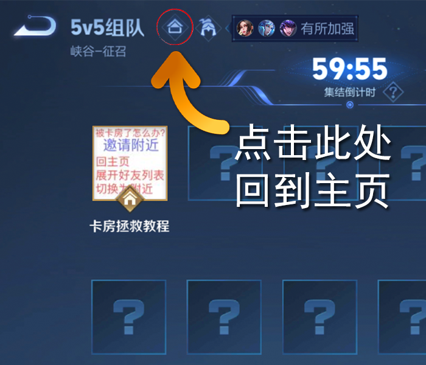
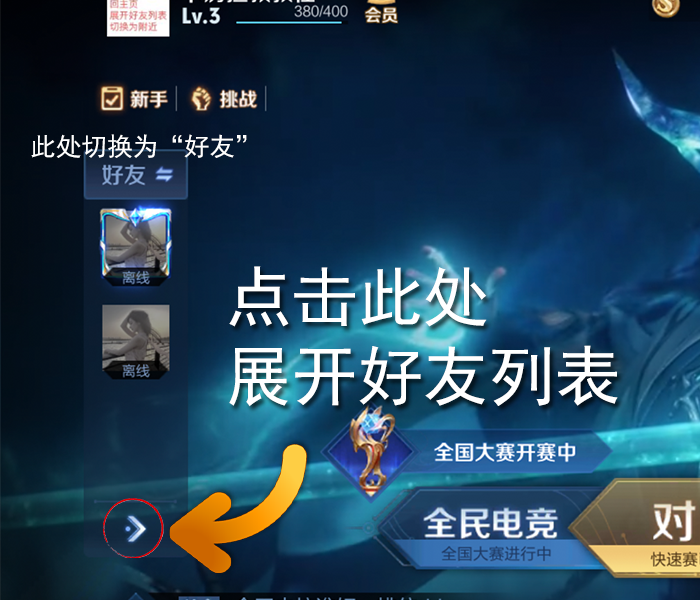
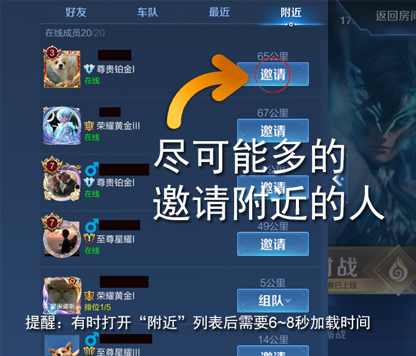
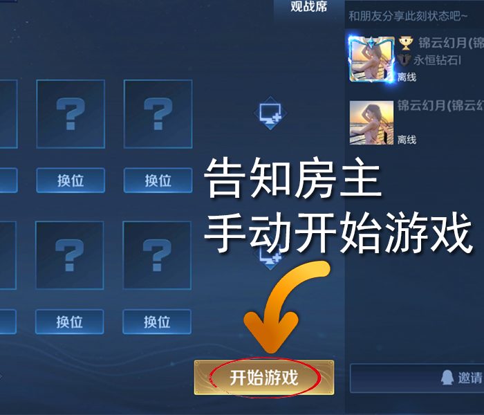

王者赛宝是无CD玩家进入游戏房间必不可少的工具，但由于其逻辑漏洞，导致有些玩家恶意进入房间后不在游戏中就坐，迫使游戏无法正常开局。在办赛人员的努力探索下，发现了一个能够补救游戏房间的方法。
第一步：返回主页（不要退出房间）

第二步：回到主页后，在左侧的列表切换为“好友”，展开好友列表

第三步：列表展开后，在上方寻找“附近”

第四步：尽可能多的邀请附近的人，在场越多玩家这样做，越有可能召集到更多的人。

第五步：人员占满房间后，由房主手动点击开始游戏，游戏即可进入战斗状态。

最后，请不要忘记在游戏中感谢为房间补位做出贡献的成员。